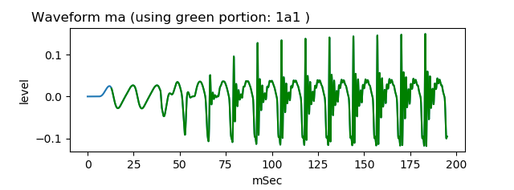

vocal tract tube nasal model
This is an experiment to generate nasal voice /na/ /ma/ sound by two tubes model and nasal effect source.
usage
Generate pseudo nasal voice /na/
python3 main2varloss_1na.py

This will save yout_na_1a1_varloss0_01_stdarea2_0_long.wav that sounds similar to voice /na/ sound.
Generate pseudo nasal voice /ma/
python3 main2varloss_1ma.py

This will save yout_ma_1a1_varloss0_01_stdarea2_0_long.wav that sounds similar to voice /ma/ sound.
Document
For more information, please see related WEB Nasal voice /na/ /ma/ sound waveform generation by two tubes model and nasal effect source or
same content in Japanese
License
MIT